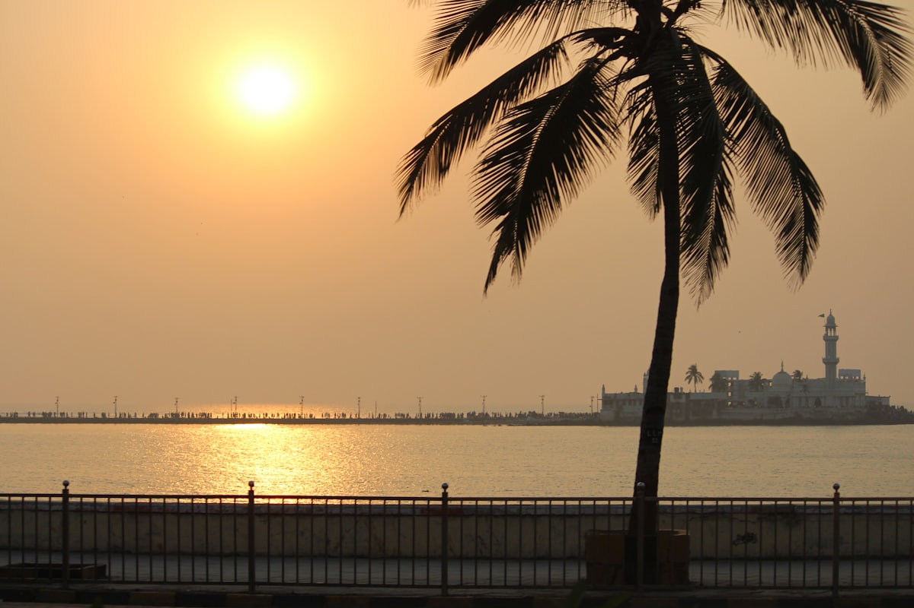

Religious Tour
Temples, a dargah, a basilica — one city, one day

Twice a day, the sea decides who reaches Haji Ali. The dargah — a mosque and a saint's tomb — stands on an islet off the shoreline, and the only way over is a causeway that goes under water at high tide. So this tour starts with a tide table. Pooja checks it before your day and plans the route around that walk — the Arabian Sea on both sides, qawwali sometimes drifting from the courtyard.
The rest of the day moves between faiths the way Mumbai does — without fuss. At Siddhivinayak in Prabhadevi, one of the city's most visited temples, stalls outside sell marigold garlands and coconuts for Ganesha. Mumba Devi, the goddess the city takes its name from, sits deep in the Bhuleshwar bazaar lanes, past flower sellers and silver shops. Babulnath, an old Shiva temple near Girgaon Chowpatty, is a climb of stone steps that ends in quiet.
Bandra changes the key: Mount Mary Basilica on its hilltop, where stalls sell wax candles shaped like hands, hearts and houses — you offer the shape of the thing you're praying for. Pooja grew up with neighbours who kept every one of these festivals, and she'll tell you what to wear at each door, when shoes come off, and what the coconut in your hand is for. A car with driver is the sensible way to cover the stretches between — ask when you book.
The day, stop by stop
- Mount Mary Basilica, BandraBegin on the Bandra hilltop, sea below and wax-candle stalls at the gate, each candle shaped like the thing being prayed for.
- Siddhivinayak Temple, PrabhadeviJoin the flow of devotees at one of the city's most visited temples — coconut and garland in hand if you like.
- Haji Ali DargahTimed to low tide: walk the causeway over the sea to the mosque and tomb on their islet.
- Chai breakTen minutes at a roadside stall — the breather that makes five sites in a day possible.
- Babulnath TempleClimb the stone steps to the old Shiva temple near Girgaon Chowpatty — it is noticeably calmer up there.
- Bhuleshwar bazaar lanesWalk in through the flower and utensil lanes rather than driving to the door.
- Mumba Devi TempleEnd with the goddess the city is named after, her shrine folded into the middle of the market.
Included
- Pooja as your guide for the whole day
- Bottled water
- Private tour — your party only
- Route planned around tide timings for Haji Ali
- Hotel pickup and drop-off (details to confirm when you book)
Not included
- Meals and drinks
- Donations and offerings at any site (always optional)
- Camera or entry fees where a site charges them
- Car with driver — can be arranged, ask when booking
What to bring
- Easy slip-on shoes — you'll be taking them off a lot
- Clothes that cover shoulders and knees
- A scarf of your own for Haji Ali's inner sanctum
- Socks, in case marble floors are hot
- A bottle of water
Good to know
- Haji Ali's causeway floods at high tide — access is tide-dependent, so the running order may change on the day
- Tuesdays are the busiest day at Siddhivinayak and queues can be long
- These are working places of worship, not museums — areas can close for prayers or rituals without notice
- The tour covers a lot of ground, so a car with driver is recommended for this route
- An early start beats both the queues and the heat
Fancy this one?
Message Pooja with your dates — she'll answer questions before you commit to anything.
Enquire on WhatsApp